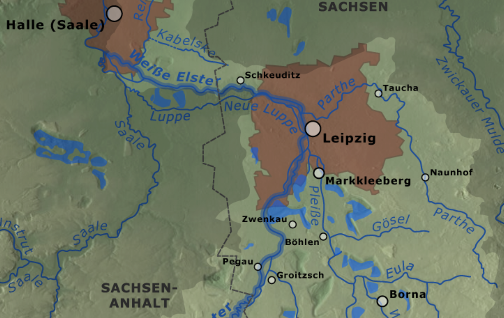
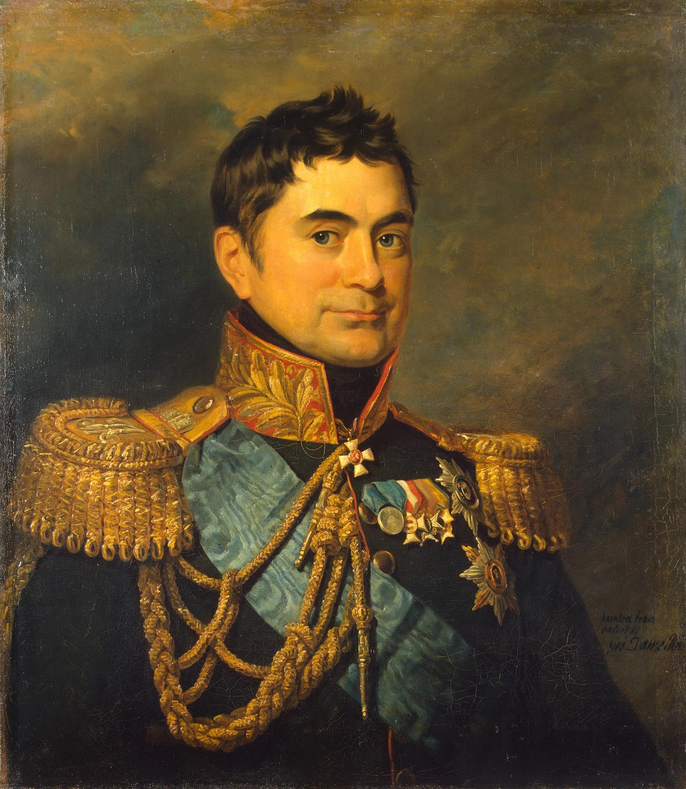
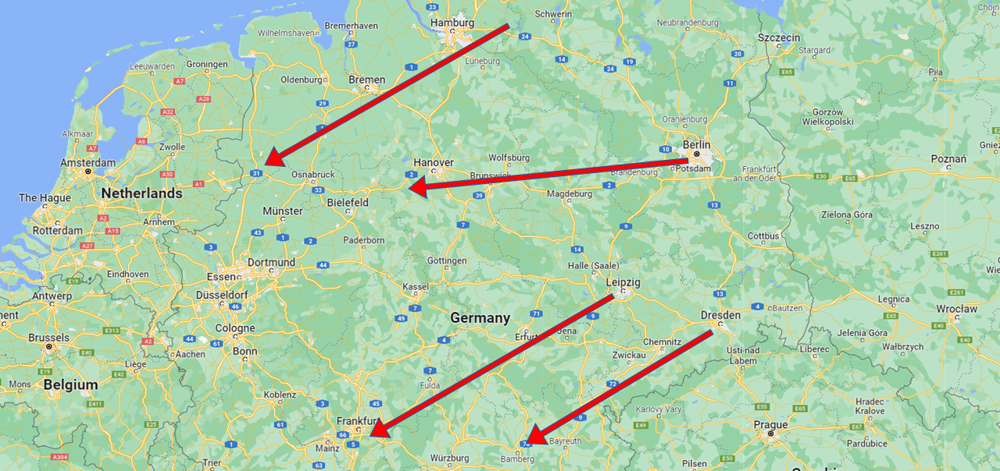

네 갈래의 도로 - 샤른호스트의 고뇌
게시: 2022-07-04T06:30:18+09:00
3월 30일, 드레스덴에 도착한 블뤼허는 하르덴베르크에게 엘베 강을 건너 진격을 시작하겠으며, 베를린 점령 이후 별다른 움직임을 보이지 않고 있던 비트겐슈타인의 러시아군도 함께 움직여주기를 바란다는 내용의 편지를 보냈습니다. 그러나 호랑이도 제말하면 온다더니, 바로 이때 4일 전에 비트겐슈타인이 보내온 편지가 비로소 도착했습니다. 그 내용은 자신이 베를린과 마그데부르크 사이의 딱 중간 위치인 벨지히(Belzig)에 사령부를 차렸는데, 여기서 샤른호스트와 만나 향후 작전계획을 논의하고 싶다는 내용이었습니다. 그런데 좋게 말하면 그런 것이었고 공손한 표현 뒤의 실질적인 내용은 샤른호스트와 향후 작전 계획을 논의하기 전에는 한발자욱도 더 전진하지 않겠다는 것이었습니다. 샤른호스트는 당장 말을 달려 하룻만에 벨지히에 도착했습니다.
비트겐슈타인과 샤른호스트의 회담은 그다지 생산적이지 않았습니다. 샤른호스트의 입장은 이제 엘베 강을 넘어 라이프치히로 진격하는 블뤼허를 지원하기 위해 비트겐슈타인도 엘베 강을 넘은 뒤, 블뤼허 쪽으로 좀더 접근해달라는 것이었습니다. 하지만 비트겐슈타인의 기본적인 입장은 엘베 강 서쪽 강변에 접한 마그데부르크에 웅크리고 있는 외젠의 위협으로부터 베를린을 지키는 것이 최우선이라는 것이었습니다. 프로이센군이 뭐라도 해보기 위해서는 비트겐슈타인과 블뤼허가 서로 지원할 수 있는 거리 내로 접근해야 했습니다. 그래서 비트겐슈타인이 내려오기를 거부한다면, 블뤼허가 북상하여 비트겐슈타인과 접근한 뒤 합세하여 외젠이 있는 마그데부르크를 치자고 샤른호스트는 제안했습니다. 하지만 러시아군은 이 안마저 거부했습니다. 이유는 그렇게 블뤼허가 북상할 경우, 연합군의 생명선이라고 할 수 있는 플라우언(Plauen)-드레스덴-브레슬라우 도로가 프랑스군의 위협에 고스란히 노출된다는 것이었습니다. 이런 시각은 비트겐슈타인의 소극성 때문만이 아니라, 러시아군의 조심성을 그대로 보여주는 것이었습니다. 이런 조심성은 쿠투조프가 3월 29일 비트겐슈타인에게 보내는 편지에서도 그대로 드러났습니다. 그는 이 편지에서, 연합군이 라이프치히 너머까지 진출하는 것은 더 많은 자원을 확보한다는 이점에 비해 병력 분산으로 인한 위험 노출이 너무 크다고 지적하며 절대 엘스터 강(Elster)을 넘지 않도록 서방 한계선을 명확히 그었습니다.

(잘러(Saale) 강의 지류인 엘스터 강은 원래 바이스 엘스터(Weiße Elster), 즉 '흰 까지' 강이라고 불리는 강인데, 정작 까치와는 전혀 무관합니다. 엘스터라는 이름은 강의 수원지인 체코의 슬라브어 alstrawa, 즉 급류라는 말에서 나왔다고 합니다. 나중에 폴란드 애국자이자 나폴레옹의 부하 원수였던 포니아토프스키가 빠져죽게 되는 강이 바로 이 바이스 엘스터 강입니다. 검은 까치 강, 즉 슈발츠 엘스터(Schwarze Elster) 강도 있을까요? 있습니다. 그 강은 바이스 엘스터 강과는 무관하게 엘베 강으로 흘러들어갑니다.) 프로이센군 일각에서는 블뤼허와 비트겐슈타인의 병력을 합쳐서 라이프치히에서 에르푸르트로 밀고 들어가는 것이 충분히 가능하다는 의견을 내기도 했으나, 쿠투조프는 곧 라인 강 방면에서 진격해올 나폴레옹의 본대를 생각하면 지나친 확장은 바람직하지 않다고 선을 그었습니다. 어떻게 생각하면 그럴 바에야 이번 전쟁을 대체 왜 시작했냐고 따질 수도 있을 지경이었지만, 쿠투조프는 바로 몇 개월 전에 나폴레옹이 러시아에서 지나치게 보급선을 확장하다가 어떤 꼴을 당했는지 잘 아는 사람이었습니다. 그는 "엘베 강에서 멀어지면 멀어질 수록, 우리 군대는 더 우세한 적군을 만나게 된다"라고 말하며 엘스터 강 서쪽으로의 진격을 불허했습니다. 쿠투조프의 조심스러운 전략에 대해서는 샤른호스트도 동의했습니다. 샤른호스트도 엘베 강 서쪽으로 본격적인 침공을 하기 위해서는 쿠투조프의 러시아군 중앙 본대가 비트겐슈타인 및 블뤼허와 합류해야만 한다고 생각했습니다. 문제는 쿠투조프는 러시아 본국에서 올 증원 병력을 기다리며 칼리쉬에서 하염없이 시간만 낭비할 뿐, 언제까지 합류한다는 기별이 전혀 없다는 점이었습니다. 샤른호스트는 쿠투조프의 참모장인 볼콘스키(Pyotr Mikhailovich Volkonsky) 대공에게 편지를 보내 현재 칼리쉬에 있는 쿠투조프의 본대가 엘베 강 근처까지 전진하는 것이 비트겐슈타인과 블뤼허에게 매우 중요하다고 간곡히 압력을 부탁했습니다. 비트겐슈타인과 블뤼허는 각각 연합군의 우익과 좌익에 불과했는데, 중앙군인 쿠투조프가 무려 16일치의 행군거리 후방인 칼리쉬에서 아예 출발조차 하지 않고 있다는 것은 사실 말이 안 되는 것이었습니다.

(표트르 볼콘스키 대공입니다. 당시 37세였던 그는 짜르 알렉산드르의 심복 중 하나였는데, 쿠투조프의 게으름과 태만에 질려버린 알렉산드르가 마침 쿠투조프의 참모장 코노브니친(Konovnitsyn)이 병으로 드러눕자 얼싸구하며 재빨리 꽂아넣어 쿠투조프를 보좌하며 감시하고 압박하게 했던 인물이었습니다. 1824년 샤를 10세가 프랑스 국왕으로 즉위할 때 러시아 대사로 파리에 오기도 했으며, 76세까지 장수했습니다.) 결국 샤른호스트와 비트겐슈타인은 별다른 합의점을 찾지 못한 채, 그저 각각 조금씩 전선을 확대하자는 선에서 회의는 마무리되었습니다. 결국 4월초 상황은 블뤼허가 라이프치히로 진격하는 것 외에는 뾰족한 전개가 없는 상황이라고 요약되었는데, 블뤼허가 라이프치히로 진격하는 데에도 캥기는 부분이 있었습니다. 바로 에르푸르트와 뷔르츠부르크에 집결하고 있다는 프랑스군이었습니다. 여기서 샤른호스트가 꺼림직하게 여기는 것을 이해하려면, 위에서 언급된 플라우언-드레스덴-브레슬라우 도로라는 것은 어떤 것인지 살펴보아야 합니다. 당시는 자동차도 기차도 없던 시절이었지만 그래도 우마차가 통과하는 주요 도로는 있었습니다. 당시 북부 독일을 동서로 관통하는 도로는 북쪽에서부터 나열하면 크게 4갈래가 있었습니다. 1) 최북로 : 함부르크 통과 : 나폴레옹은 이 곳을 가장 중요시했습니다만 함부르크 주민들의 반프랑스 소요사태를 일으키자 이 곳을 지키던 생시르 장군은 어이없이 후퇴를 해버렸고, 그 덕에 러시아군이 함부르크를 손쉽게 점령한 바 있었습니다. 하지만 정작 프로이센-러시아 연합군은 나폴레옹과는 달리 이 곳의 중요성을 간과했고, 비트겐슈타인이나 샤른호스트나 이 방면에 대규모 병력을 투입할 여지는 없다고 판단했습니다. 2) 근북로 : 마그데부르크 통과 : 이 곳은 베를린과 네덜란드를 연결하는 주요 도로였으나, 외젠이 마그데부르크를 굳게 지키고 있으므로 사실상 통과가 어려웠습니다. 3) 근남로 : 라이프치히 통과 : 샤른호스트는 라이프치히에서 에르푸르트(Erfurt), 아이제나흐(Eisenach), 뷔르츠부르크(Würzburg), 프랑크푸르트(Frankfurt)로 연결되는 이 도로를 나폴레옹이 반격할 때 사용할 것이라고 예상했습니다. 이유는 마그데부르크의 외젠과 합동 작전을 펼치기에 가장 적합한 위치였기 때문입니다. 다만 뷔르츠부르크와 에르푸르트 사이에 지세가 험한 튀링겐 삼림지대가 있다는 것이 문제였습니다. 4) 최남로 : 드레스덴 통과 : 드레스덴에서 플라우언(Plauen)과 호프(Hof), 밤베르크(Bamberg)로 연결되는 이 도로를 러시아군은 가장 중요시했습니다. 슐레지엔의 브레슬라우를 통해 폴란드와 러시아로 곧장 연결되는 보급로이기도 했고, 또한 오스트리아를 연합에 끌어들이기 위해서는 이 도로망을 장악하는 것이 절대적으로 중요했기 때문이었습니다. 역으로 그렇기 때문에 나폴레옹이 이 경로를 공략할 가능성도 충분했습니다.

(위 4개 경로를 지도상에서 대충 표시한 것입니다.) 비트겐슈타인과 회의를 마친 샤른호스트가 블뤼허에게 4월 1일 쓴 편지에서, 샤른호스트는 플라우언과 게라(Gera) 방면에서 갑자기 프랑스군이 나타나 연합군의 주연락로를 위협하지 않을지 감시해야 하며, 뮐베르크(Mühlberg) 등에 추가로 엘베 강을 건널 다리를 놓아야 한다고 알려왔습니다. 비트겐슈타인과 작전 회의를 하러 갔던 똑똑한 참모가 난데없이 엉뚱한 위치에 다리를 놓으라는 편지를 보내왔으니 블뤼허는 꽤 당황했을 것 같습니다. 대체 샤른호스트는 왜 갑자기 뮐베르크에 다리가 필요하다고 생각한 것일까요? Source : The Life of Napoleon Bonaparte, by William Milligan Sloane Napoleon and the Struggle for Germany, by Leggiere, Michael V
https://en.wikipedia.org/wiki/White_Elster https://en.wikipedia.org/wiki/Pyotr_Mikhailovich_Volkonsky